Section3.3Graphs and Roots of Polynomial Functions
Subsection3.3.1Introduction
In the previous section, we explored the short run behavior of quadratics, a special case of polynomials. In this section, we will explore the short run behavior of polynomials in general.
Definition3.3.1.Important Topics of this Section.
Short Run Behavior
Intercepts (Horizontal and Vertical)
Methods to find Horizontal intercepts
Factoring Methods
Factored Forms
Technology
Graphical Behavior at intercepts
Single, Double and Triple zeros (or multiplicity 1, 2, and 3 behaviors)
Solving polynomial inequalities using test values and graphing techniques
Writing equations using intercepts
Estimating extrema
Subsection3.3.2Intercepts
As with any function, the vertical intercept can be found by evaluating the function at an input of zero. Since this is evaluation, it is relatively easy to do it for a polynomial of any degree.
To find horizontal intercepts, we need to solve for when the output will be zero. For general polynomials, this can be a challenging prospect. While quadratics can be solved using the relatively simple quadratic formula, the corresponding formulas for cubic and 4th degree polynomials are not simple enough to remember, and formulas do not exist for general higher-degree polynomials. Consequently, we will limit ourselves to three cases:
When the polynomial can be factored using known methods: greatest common factor and trinomial factoring.
When the polynomial is given in factored form.
Using technology to determine the intercepts.
Example3.3.2.
Find the horizontal intercepts of \(f(x)=x^{6}-3x^{4}+2x^{2}\text{.}\)
We can attempt to factor this polynomial to find solutions for \(f(x) = 0\text{.}\) That is, we are finding the \(x\) values such that \(x^{6}-3x^{4}+2x^{2}=0\text{.}\) Factoring out the greatest common factor of \(x^{2}\) from the left hand side yields \(x^{2} (x^{4}-3x^{2}+2)=0\text{.}\) Factoring the polynomial inside the parenthesis gives us \(x^{2} (x^{2}-1)(x^{2}-2)=0\text{.}\) Then, we set each of these factors equal to zero to find our solutions. Setting \(x^{2}=0,\) we get the solution \(x=0.\) If \(x^{2}-1=0,\) then \(x^{2}=1,\) and this has the two solutions \(x=1\) and \(x=-1.\) Setting the final factor equal to zero gives \(x^{2}-2=0,\) and so \(x^{2}=2,\) which has solutions \(x=\sqrt{2}\) and \(x=-\sqrt{2}\text{.}\)
This gives us 5 horizontal intercepts in total: \(x=0,1,-1,\sqrt{2},-\sqrt{2}\text{.}\)
Example3.3.3.
Find the vertical and horizontal intercepts of \(g(t)=(t-2)^{2} (2t+3).\)
The vertical intercept can be found by evaluating \(g(0)\text{.}\)\(g(0)=(0-2)^{2} (2(0)+3)=12\text{.}\)
The horizontal intercepts can be found by solving \(g(t) = 0\text{.}\) Thus, we want to find \(t\) such that \((t-2)^{2} (2t+3)=0\text{.}\) Since this is already factored, we can set each factor equal to zero and solve for \(t\) in those individual factors. \((t-2)^{2}=0\) only when \(t-2=0,\) thus \(t=2\text{.}\) Then, \(2t+3=0\) when \(t=\dfrac{-3}{2}.\)
We can always check our answers are reasonable by graphing the polynomial.
Example3.3.4.
Find the horizontal intercepts of \(h(t)=t^{3}+4t^{2}+t-6\text{.}\)
Since this polynomial is not in factored form, has no common factors, and does not appear to be factorable using techniques we know, we can turn to technology to find the intercepts.
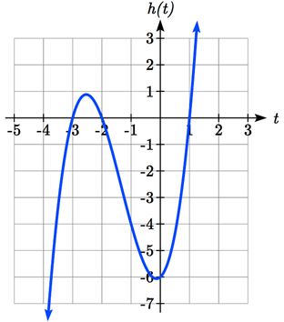
Figure3.3.5.Graph of \(h(t)=t^3+4t^2+t-6\)
Graphing this function, it appears there are horizontal intercepts at \(t = -3, -2, \text{ and }1\text{.}\)
We could check these are correct by plugging in these values for \(t\) and verifying that \(h(-3)=h(-2)=h(1)=0\text{.}\)
Checkpoint3.3.6.
Find the vertical and horizontal intercepts of the function \(f(t)=t^{4}-4t^{2}\text{.}\)
Subsection3.3.3Graphical Behavior at Intercepts
If we graph the function \(f(x)=(x+3)(x-2)^{2} (x+1)^{3}\text{,}\) notice that the behavior at each of the horizontal intercepts is different.
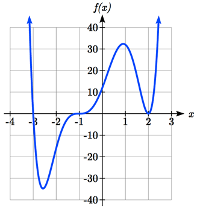
Figure3.3.7.Graph of \(f(x)=(x+3)(x-2)^{2} (x+1)^{3}\)
At the horizontal intercept \(x = -3\text{,}\) coming from the \(x+3\) factor of the polynomial, the graph passes directly through the horizontal intercept. The factor \(x+3\) is linear (has a power of 1 on the \(x\) term), so the behavior near the intercept is like that of a line - it passes directly through the intercept. We call this a single zero, since the zero corresponds to a single factor of the function.
At the horizontal intercept \(x = 2\text{,}\) coming from the \((x-2)^{2}\) factor of the polynomial, the graph touches the axis at the intercept and changes direction. The factor is quadratic (degree 2), so the behavior near the intercept is like that of a quadratic function – it bounces off the horizontal axis at the intercept. Since \((x-2)^{2}=(x-2)(x-2)\text{,}\) the factor is repeated twice, so we call this a double zero. We could also say the zero has multiplicity 2.
At the horizontal intercept \(x = -1\text{,}\) coming from the \((x+1)^{3}\) factor of the polynomial, the graph passes through the axis at the intercept, but flattens out a bit first. This factor is cubic (degree 3), so the behavior near the intercept is like that of a cubic, with the same “S” type shape near the intercept that the toolkit function \(y=x^{3}\) has. We call this a triple zero. We could also say the zero has multiplicity 3.
By utilizing these behaviors, we can sketch a reasonable graph of a factored polynomial function without needing technology.
Definition3.3.8.Graphical Behavior of Polynomials at Horizontal Intercepts.
If a polynomial contains a factor of the form \((x-h)^{p}\text{,}\) the behavior near the horizontal intercept \(h\) is determined by the power on the factor. If \(p=1\) the horizontal intercept will look something like this:
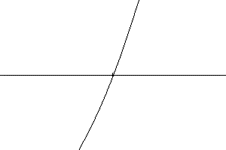
Figure3.3.9.A single zero, also known as a zero with multiplicity one
If \(p=2\) the horizontal intercept will look something like this:
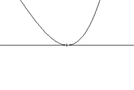
Figure3.3.10.A double zero, also known as a zero with multiplicity two
If \(p=3\) the horizontal intercept will look something like this:
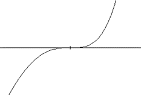
Figure3.3.11.A triple zero, also known as a zero with multiplicity three
For higher even powers 4,6,8 etc.… the graph will still bounce off the horizontal axis but the graph will appear flatter with each increasing even power as it approaches and leaves the axis.
For higher odd powers, 5,7,9 etc… the graph will still pass through the horizontal axis but the graph will appear flatter with each increasing odd power as it approaches and leaves the axis.
Example3.3.12.
Sketch a graph of \(f(x)=-2(x+3)^{2} (x-5)\text{.}\)
This graph has two horizontal intercepts. At \(x = -3\text{,}\) the factor is squared, indicating the graph will bounce at this horizontal intercept. At \(x = 5\text{,}\) the factor is not squared, indicating the graph will pass through the axis at this intercept.
Additionally, we can see the leading term, if this polynomial were multiplied out, would be \(-2x^{3}\text{,}\) so the long-run behavior is that of a vertically reflected cubic, with the outputs decreasing as the inputs get large positive, and the inputs increasing as the inputs get large negative.
To sketch this we consider the following: As \(x\rightarrow -\infty\) the function \(f(x)\rightarrow \infty\) so we know the graph starts in the 2nd quadrant and is decreasing toward the horizontal axis.
At \((-3, 0)\) the graph bounces off the horizontal axis and so the function must start increasing.
Since \(f(0)=90\text{,}\) the point \((0, 90)\) is the vertical intercept of the graph.
Somewhere after this point, the graph must turn back down or start decreasing toward the horizontal axis since the graph passes through the next intercept at \((5,0)\text{.}\)
As \(x\rightarrow \infty\) the function \(f(x)\rightarrow -\infty\) so we know the graph continues to decrease and we can stop drawing the graph in the 4th quadrant.
Using technology we can verify the shape of the graph:
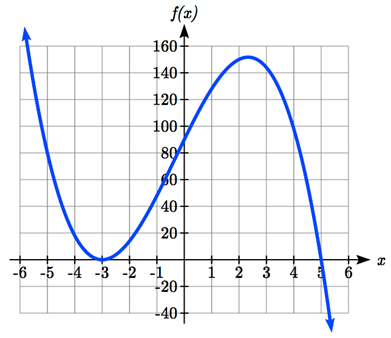
Figure3.3.13.Graph of f(x)=-2(x+3)^{2} (x-5)
Checkpoint3.3.14.
Given the function \(g(x)=x^{3}-x^{2}-6x\text{,}\) use the methods that we have learned so far to find the vertical and horizontal intercepts, determine where the function is negative and positive, describe the long run behavior, and sketch the graph without technology.
Subsection3.3.4Solving Polynomial Inequalities
One application of our ability to find intercepts and sketch a graph of polynomials is the ability to solve polynomial inequalities. It is a very common question to ask when a function will be positive or negative. We can solve polynomial inequalities by either utilizing the graph, or by using test values.
Example3.3.15.
Solve \((x+3)(x+1)^{2} (x-4)>0\text{.}\)
As with all inequalities, we will start by solving the equality \((x+3)(x+1)^{2} (x-4)=0\text{,}\) which has solutions at \(x = -3, -1, \text{ and }4\text{.}\) We know the function can only change from positive to negative at these values, so these divide the inputs into 4 intervals.
We can now choose a test value in each interval and evaluate the function \(f(x)=(x+3)(x+1)^{2} (x-4)\) at each test value to determine if the function is positive or negative in that interval.
For the first interval where \(x<-3,\) we can use the test value \(x=-4\text{.}\) Since \(f(-4)=72\text{,}\) we can conclude that the function is positive for all \(x\) values less than -3.
For the next interval, \(-3<x<-1\text{,}\) we can use the text value \(x=-2\text{.}\)\(f(-2)=-6\text{,}\) so we know that \(f\) must be negative for all \(x\) in the interval \((-3,-1)\text{.}\)
The third interval, \(-1<x<4\text{,}\) includes the value \(x=0,\) so we can check and see that \(f(0)=-12\text{.}\) Thus, the function \(f\) is negative on the interval \((-1,4)\text{.}\)
Lastly, we can check the interval where \(4<x\) and evaluate our function at \(x=5\) to find \(f(5)=288.\) Thus \(f\) is positive for all \(x\) values larger than 4.
On a number line this would look like:
Figure3.3.16.
From our test values, we can determine this function is positive when \(x < -3\) or \(x > 4\text{,}\) or in interval notation, \((-\infty,-3)\cup(4,\infty)\text{.}\)
We could have also determined on which intervals the function was positive by sketching a graph of the function. We illustrate that technique in the next example
Example3.3.17.
Find the domain of the function \(v(t)=\sqrt{6-5t-t^{2}}\text{.}\)
A square root is only defined when the quantity we are taking the square root of, the quantity inside the square root, is zero or greater. Thus, the domain of this function will be when \(6-5t-t^{2}\geq 0\text{.}\)
We start by solving the equality \(6-5t-t^{2}=0\text{.}\) While we could use the quadratic formula, this equation factors nicely to \((6+t)(1-t)=0\text{,}\) giving horizontal intercepts \(t = 1\) and \(t = -6\text{.}\) We also know that since the leading coefficient of the function is -1, the graph must open downward.
Sketching a graph of this quadratic will allow us to determine when it is positive.
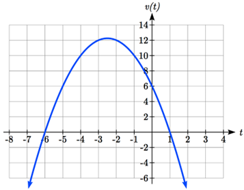
Figure3.3.18.
From the graph we can see this function is positive for inputs between the intercepts. So \(6-5t-t^{2}\geq 0\) when \(-6\leq t\leq 1\text{,}\) and this will be the domain of the \(v(t)\) function.
Subsection3.3.5Writing Equations using Intercepts
Since a polynomial function written in factored form will have a horizontal intercept where each factor is equal to zero, we can form a function that will pass through a set of horizontal intercepts by introducing a corresponding set of factors.
Definition3.3.19.Writing an Equation for a Polynomial from Intercepts.
If we know the horizontal intercepts and the behavior or multiplicity at those intercepts, we can write a polynomial of minimal degree with those intercepts. We can do so by following these steps:
Determine the horizontal intercepts \(x=x_{1},x_{2},\dots,x_{k}\text{.}\)
Examine the behavior at each intercept to determine the corresponding multiplicity of each intercept, \(p_{1},p_{2},\dots,p_{k}\text{.}\)
Write the polynomial in factored form \(f(x)=a(x-x_{1} )^{p_1}(x-x_{2} )^{p_2}\cdots(x-x_{k} )^{p_k}\text{.}\)
Use another point on the graph to solve for the stretch factor \(a\text{.}\) This \(a\) will also be the leading coefficient for the polynomial.
Notice the degree of the polynomial will be the sum of the multiplicities \(p_{i}\text{.}\)
Example3.3.20.
Write a formula for the polynomial function graphed here.
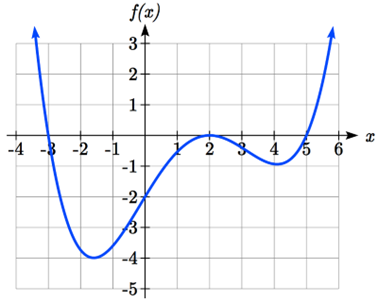
Figure3.3.21.
This graph has three horizontal intercepts: \(x = -3, 2, \text{ and }5\text{.}\) At \(x = -3\) and \(x=5\) the graph passes through the axis, suggesting the corresponding factors of the polynomial will be linear. At \(x = 2\) the graph bounces at the intercept, suggesting the corresponding factor of the polynomial will be 2nd degree (quadratic).
To determine the stretch factor, we can utilize another point on the graph. Here, the vertical intercept appears to be \((0,-2)\text{,}\) so we can plug in those values to solve for \(a\text{:}\)\(-2=a(0+3)(0-2)^{2} (0-5)\) simplifies to \(-2=-60a\text{,}\) giving us \(a=\dfrac{1}{30}\text{.}\)
The graphed polynomial appears to represent the function \(f(x)=1/30(x+3)(x-2)^{2} (x-5)\text{.}\)
Checkpoint3.3.22.
Given the graph, write a formula for the function shown.
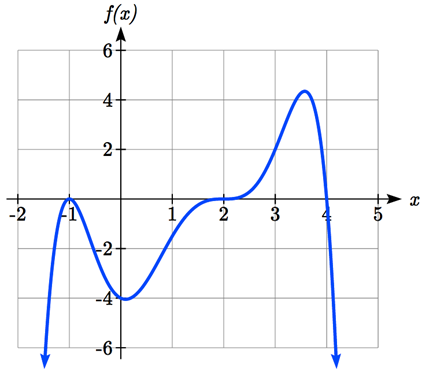
Figure3.3.23.
Subsection3.3.6Estimating Extrema
With quadratics, we were able to algebraically find the maximum or minimum value of the function by finding the vertex. For general polynomials, finding these points is not possible without more advanced techniques from calculus. Even then, finding where extrema occur can still be algebraically challenging. For now, we will estimate the locations of extrema points using technology to generate a graph.
Example3.3.24.
An open-top box is to be constructed by cutting out squares from each corner of a 14 cm by 20 cm sheet of plastic then folding up the sides. Find the size of squares that should be cut out to maximize the volume enclosed by the box.
We will start this problem by drawing a picture, labeling the width of the cut-out squares with a variable, \(w\text{.}\)
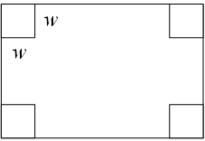
Figure3.3.25.
Notice that after a square is cut out from each end, it leaves a \((14-2w)\) cm by \((20-2w)\) cm rectangle for the base of the box, and the box will be \(w\) cm tall. This gives the volume:
Using technology to sketch a graph allows us to estimate the maximum value for the volume, restricted to reasonable values for \(w\text{:}\) values from 0 to 7 (consider why we only care about values of \(w\) in this range).
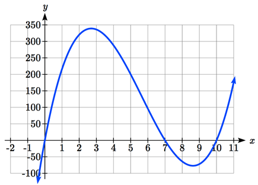
Figure3.3.26.
From this graph, we can estimate the maximum value is around 340, and occurs when the squares are about 2.75 cm wide. To improve this estimate, we could use advanced features of our technology, if available, or simply change our window to zoom in on our graph.
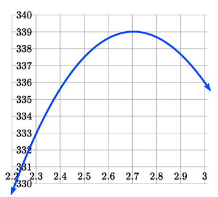
Figure3.3.27.A zoomed-in view of the previous graph.
From this zoomed-in view, we can refine our estimate for the max volume to about 339, when the squares are 2.7 cm wide. In fact, using calculus methods (which we will not cover), we would be able to determine that the maximum volume is 339.01255 cubic centimeters, and this occurs when the squares are 2.70394 cm long, meaning that our estimate was quite accurate.
Checkpoint3.3.28.
Use graphing technology to find the maximum and minimum values on the interval \([-1, 4]\) of the function \(f(x)=-0.2(x-2)^{3} (x+1)^{2} (x-4)\text{.}\)
Checkpoint3.3.29.
[Answers to Exercises]
Vertical intercept is \((0, 0)\text{.}\)\(0=t^{4}-4t^{2}\) factors as \(0=t^{2}(t^{2}-4)=t^{2} (t-2)(t+2)\text{.}\) So, the horizontal intercepts are \((0, 0), (-2, 0), (2, 0).\)
Vertical intercept at \((0, 0)\text{,}\) Horizontal intercepts are \((-2, 0), (0, 0), (3, 0).\) The function is negative on \((-\infty -2)\cup(0, 3).\) The function is positive on \((-2, 0)\cup(3,\infty).\) The leading term is \(x^{3}\text{,}\) so as \(x\rightarrow-\infty g(x)\to -\infty\) and as \(x\to \infty, g(x)\to \infty.\)
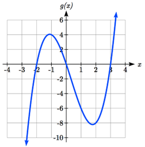
Figure3.3.30.Graph of \(g(x)=x^{3}-x^{2}-6x\)
Double zero at \(x=-1\text{,}\) triple zero at \(x=2\text{,}\) single zero at \(x=4\text{.}\)\(f(x)=a(x-2)^{3} (x+1)^{2} (x-4)\text{.}\) Substituting \((0,-4)\) and solving for \(a\text{,}\)\(f(x)=\dfrac{-1}{8}(x-2)^{3} (x+1)^{2} (x-4).\)
The minimum occurs at approximately the point \((0, -6.5)\text{,}\) and the maximum occurs at approximately the point \((3.5, 7)\text{.}\)